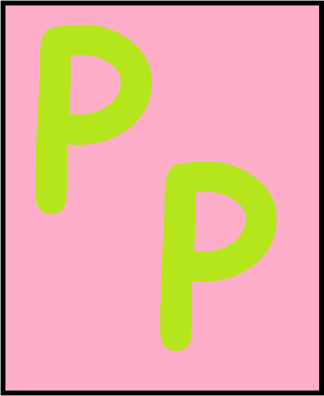

Ben's Meme Page
PP Plugin
About the plugin:
- A hand curated plugin for BukkitAPI based Minecraft servers using Minecraft 1.18 or above
- Logs the amount of time per player which can be displayed using /pp
- Whole server pp scoreboard feature
- Built in autosave and server backup

Experience the Magic:
Download the plugin here (version 1.5)
The source of the pp
Manual:
Command List:
- [/pp] - Shows your play time
- [/pp playername] - Shows someone else's play time (online or offline - must have logged in once)
- [/pp show playername] - Sends a message showing of how long you've played
- [/pp restrain {yes|no}] toggles whether you see other people's pp messages ex(/pp restrain yes)
- [/pp spam {yes|no}] toggles whether you see certain server messages ex(/pp spam no)
- [/pp ~score] - Displays a scoreboard of everyone's play time (online and offline)
- [/pp ~changelog] - Shows the changlog
- [/pp ~backup] - see "Backups"
Backups:
This feature allows the plugin to compress the server's "/world" folder and upload it to the cloud
through the Google Drive API. To set this up you must have a Google Could Platform project with the DriveAPI
enabled. The main server directory must contain your Drive credentials in the form of a file named "credentials.json"
See https://developers.google.com/workspace/guides/create-credentials
and https://developers.google.com/workspace/guides/create-project for details.